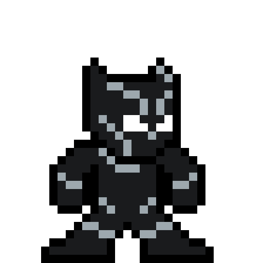

<!DOCTYPE html>
<html lang="en">
<head>
  <meta charset="UTF-8">
  <meta name="viewport" content="width=device-width, initial-scale=1.0">
  <title>STRASSEN'S MATRIX MULTIPLICATION // [◈] BLACK PANTHER — ALGO-VENGERS</title>
  
  <meta name="description" content="Design & Analysis of Algorithms: STRASSEN'S MATRIX MULTIPLICATION. Mission 03: DIVIDE AND CONQUER.">
  <meta name="theme-color" content="#f8fafc">

  <!-- Google Fonts -->
  <link rel="preconnect" href="https://fonts.googleapis.com">
  <link rel="preconnect" href="https://fonts.gstatic.com" crossorigin>
  <link href="https://fonts.googleapis.com/css2?family=Chakra+Petch:wght@500;700&family=Plus+Jakarta+Sans:wght@400;500;600;700&family=Press+Start+2P&family=Silkscreen:wght@400;700&family=JetBrains+Mono:wght@400;600&display=swap" rel="stylesheet">

  <!-- KaTeX for beautiful math formulas -->
  <link rel="stylesheet" href="https://cdn.jsdelivr.net/npm/katex@0.16.9/dist/katex.min.css">
  <script defer src="https://cdn.jsdelivr.net/npm/katex@0.16.9/dist/katex.min.js"></script>
  <script defer src="https://cdn.jsdelivr.net/npm/katex@0.16.9/dist/contrib/auto-render.min.js"></script>

  <style>
    :root {
      --bg-main: #f8fafc;
      --border-dark: #0f172a;
      --text-main: #0f172a;
      --text-muted: #475569;
      --color-gold: #d97706;
      --color-cyan: #0284c7;
      --hero-accent: #0f172a;
      --badge-bg: #f1f5f9;

      --font-pixel: 'Press Start 2P', monospace;
      --font-pixel-sub: 'Silkscreen', monospace;
      --font-body: 'Plus Jakarta Sans', system-ui, sans-serif;
      --font-code: 'JetBrains Mono', monospace;
      --top-bar-height: 32px;
      --nav-height: 72px;
      --container-max: 1100px;
    }

    *, *::before, *::after { box-sizing: border-box; margin: 0; padding: 0; }
    
    /* Pixelated retro mouse pointer */
    html, body {
      scroll-behavior: smooth;
      font-size: 16px;
      background-color: var(--bg-main);
      color: var(--text-main);
      font-family: var(--font-body);
      cursor: url("data:image/svg+xml,%3Csvg%20xmlns%3D%22http%3A//www.w3.org/2000/svg%22%20width%3D%2224%22%20height%3D%2224%22%20viewBox%3D%220%200%2024%2024%22%20shape-rendering%3D%22crispEdges%22%3E%20%3Cpath%20fill%3D%22%230f172a%22%20stroke%3D%22%23ffffff%22%20stroke-width%3D%221.5%22%20d%3D%22M2%202v18l5-5%204%208%203-1.5-4-8h6L2%202z%22/%3E%20%3C/svg%3E") 0 0, auto !important;
    }
    
    body {
      overflow-x: hidden;
      min-height: 100vh;
      line-height: 1.6;
      display: flex;
      flex-direction: column;
      background-color: var(--bg-main);
    }

    /* Native CSS Circular Hero Emblem Cursor on all interactive elements (ZERO TRAILING) */
    a, button, .pixel-btn, .topic-card, .mission-card, input, select, label, .top-progress-track-wrapper, .hero-speech-bubble, [role="button"], [data-hero-cursor], .quiz-opt-btn {
      cursor: url("data:image/svg+xml,%3Csvg%20xmlns%3D%22http%3A//www.w3.org/2000/svg%22%20width%3D%2232%22%20height%3D%2232%22%20viewBox%3D%220%200%2032%2032%22%20shape-rendering%3D%22crispEdges%22%3E%20%3Ccircle%20cx%3D%2216%22%20cy%3D%2216%22%20r%3D%2214%22%20fill%3D%22%230f172a%22%20stroke%3D%22%236b21a8%22%20stroke-width%3D%222%22/%3E%20%3Ccircle%20cx%3D%2216%22%20cy%3D%2216%22%20r%3D%229%22%20fill%3D%22none%22%20stroke%3D%22%23cbd5e1%22%20stroke-width%3D%221.5%22%20stroke-dasharray%3D%222%2C2%22/%3E%20%3Cpolygon%20points%3D%2216%2C19%2014%2C24%2018%2C24%22%20fill%3D%22%23ffffff%22/%3E%20%3Cpolygon%20points%3D%2211%2C18%209%2C22%2013%2C22%22%20fill%3D%22%23ffffff%22/%3E%20%3Cpolygon%20points%3D%2221%2C18%2019%2C22%2023%2C22%22%20fill%3D%22%23ffffff%22/%3E%20%3C/svg%3E") 16 16, pointer !important;
    }

    .cyber-grid-bg {
      position: fixed; top: 0; left: 0; width: 100%; height: 100%;
      background-image: linear-gradient(to right, rgba(15, 23, 42, 0.05) 1px, transparent 1px), linear-gradient(to bottom, rgba(15, 23, 42, 0.05) 1px, transparent 1px);
      background-size: 32px 32px; pointer-events: none; z-index: 0;
    }
    .container { max-width: var(--container-max); margin: 0 auto; padding: 0 24px; position: relative; z-index: 2; }
    .pixel-heading { font-family: var(--font-pixel); letter-spacing: 1px; text-transform: uppercase; }

    /* Pixel Buttons */
    .pixel-btn {
      display: inline-flex; align-items: center; justify-content: center; gap: 8px;
      padding: 10px 18px; font-family: var(--font-pixel); font-size: 0.65rem;
      text-decoration: none; text-transform: uppercase; border: 3px solid var(--border-dark);
      position: relative; user-select: none;
      transition: transform 0.1s ease, box-shadow 0.1s ease;
      box-shadow: -3px 0 0 0 var(--border-dark), 3px 0 0 0 var(--border-dark), 0 -3px 0 0 var(--border-dark), 0 3px 0 0 var(--border-dark), 0 4px 0 0 var(--border-dark);
    }
    .pixel-btn:hover { transform: translateY(-2px); box-shadow: -3px 0 0 0 var(--border-dark), 3px 0 0 0 var(--border-dark), 0 -3px 0 0 var(--border-dark), 0 3px 0 0 var(--border-dark), 0 6px 0 0 var(--border-dark); }
    .pixel-btn:active { transform: translateY(2px); box-shadow: -3px 0 0 0 var(--border-dark), 3px 0 0 0 var(--border-dark), 0 -3px 0 0 var(--border-dark), 0 3px 0 0 var(--border-dark), 0 2px 0 0 var(--border-dark); }
    .pixel-btn-primary { background: #facc15; color: #0f172a; font-weight: bold; }
    .pixel-btn-secondary { background: #ffffff; color: var(--color-cyan); }
    .pixel-btn-accent { background: var(--hero-accent); color: #ffffff; }

    /* Sticky Navbar */
    .pixel-navbar {
      position: fixed; top: var(--top-bar-height); left: 0; width: 100%; height: var(--nav-height);
      background: rgba(255, 255, 255, 0.96); backdrop-filter: blur(10px);
      border-bottom: 3px solid var(--border-dark); z-index: 1000; display: flex; align-items: center;
    }
    .nav-container { display: flex; align-items: center; justify-content: space-between; width: 100%; max-width: var(--container-max); margin: 0 auto; padding: 0 24px; }
    .nav-brand { display: flex; align-items: center; gap: 12px; text-decoration: none; }
    .brand-icon { width: 36px; height: 36px; background: #facc15; border: 2px solid var(--border-dark); display: flex; align-items: center; justify-content: center; }
    .brand-icon svg { width: 22px; height: 22px; fill: var(--border-dark); }
    .brand-text { font-family: var(--font-pixel); font-size: 1.05rem; color: var(--border-dark); }
    .brand-text span { color: #dc2626; }
    .breadcrumbs { font-family: var(--font-pixel); font-size: 0.6rem; color: var(--text-muted); display: flex; align-items: center; gap: 6px; }
    .breadcrumbs a { color: var(--color-cyan); text-decoration: none; }

    /* Persistent Top Reading Progress Bar */
    #global-top-progress {
      position: fixed; top: 0; left: 0; width: 100%; height: var(--top-bar-height);
      background: #0f172a; border-bottom: 2px solid #000; z-index: 10002;
      display: flex; align-items: center; justify-content: space-between; padding: 0 16px;
      box-shadow: 0 2px 8px rgba(0,0,0,0.4);
    }
    .top-progress-hero-badge {
      display: flex; align-items: center; gap: 8px; flex-shrink: 0;
    }
    .top-hero-symbol-box {
      width: 22px; height: 22px; background: #f1f5f9; color: #0f172a;
      border: 1.5px solid #0f172a; font-family: var(--font-pixel); font-size: 0.75rem;
      display: flex; align-items: center; justify-content: center; border-radius: 2px;
    }
    .top-hero-title {
      font-family: var(--font-pixel); font-size: 0.58rem; color: #f8fafc; letter-spacing: 0.5px;
    }
    .top-progress-track-wrapper {
      flex: 1; max-width: 650px; margin: 0 20px; height: 10px; background: #1e293b;
      border: 1.5px solid #475569; border-radius: 999px; position: relative; cursor: pointer;
    }
    .top-progress-fill-bar {
      height: 100%; width: 0%; background: linear-gradient(90deg, #0f172a, #334155, #6b21a8); border-radius: 999px;
      transition: width 0.08s ease-out;
    }
    .top-progress-slider-marker {
      position: absolute; top: 50%; left: 0%; transform: translate(-50%, -50%);
      width: 22px; height: 22px; background: #0f172a; border: 2px solid #0f172a;
      border-radius: 50%; display: flex; align-items: center; justify-content: center;
      font-family: var(--font-pixel); font-size: 0.65rem; color: #0f172a;
      box-shadow: 0 0 10px #0f172a; pointer-events: none; transition: left 0.08s ease-out;
    }
    .top-progress-percent-readout {
      font-family: var(--font-pixel); font-size: 0.65rem; color: #facc15; min-width: 50px; text-align: right; flex-shrink: 0;
    }

    /* Main Container */
    main { flex: 1; padding-top: calc(var(--nav-height) + var(--top-bar-height) + 24px); padding-bottom: 60px; }

    /* Topic Hero Section */
    .topic-hero {
      background: #ffffff; border: 3px solid var(--border-dark);
      box-shadow: 0 6px 0 var(--border-dark); padding: 32px;
      margin-bottom: 32px; display: grid; grid-template-columns: auto 1fr; gap: 28px; align-items: center;
    }
    .hero-sprite-frame {
      width: 120px; height: 130px; background: var(--badge-bg);
      border: 3px solid var(--border-dark); display: flex; align-items: center; justify-content: center;
      position: relative; box-shadow: 0 4px 0 var(--border-dark); overflow: hidden;
    }
    .hero-avatar-img {
      max-width: 100px; max-height: 112px; width: auto; height: auto;
      object-fit: contain; image-rendering: pixelated;
      filter: drop-shadow(0 4px 8px rgba(0,0,0,0.25)); transition: transform 0.2s cubic-bezier(0.175, 0.885, 0.32, 1.275);
    }
    .topic-hero:hover .hero-avatar-img { transform: scale(1.1) translateY(-3px); }

    .hero-meta-tag {
      display: inline-block; font-family: var(--font-pixel); font-size: 0.6rem;
      background: #ffffff; border: 2px solid var(--border-dark); padding: 3px 10px;
      margin-bottom: 10px; font-weight: bold; color: var(--hero-accent); box-shadow: 0 2px 0 var(--border-dark);
    }
    .hero-title { font-size: 1.6rem; margin-bottom: 12px; line-height: 1.3; color: var(--border-dark); }
    .hero-tagline { font-family: var(--font-code); font-size: 0.95rem; color: var(--text-muted); margin-bottom: 14px; font-weight: 600; }
    .hero-quote-box {
      background: #f1f5f9; border-left: 4px solid var(--hero-accent);
      padding: 10px 14px; font-style: italic; color: #1e293b; font-size: 0.88rem;
    }

    /* Content Cards */
    .content-card {
      background: #ffffff; border: 3px solid var(--border-dark);
      box-shadow: 0 5px 0 var(--border-dark); padding: 28px; margin-bottom: 28px;
    }
    .card-heading {
      display: flex; justify-content: space-between; align-items: center;
      font-family: var(--font-pixel); font-size: 0.85rem; color: var(--border-dark);
      margin-bottom: 18px; border-bottom: 2px solid #e2e8f0; padding-bottom: 10px;
    }
    .card-desc-text { font-size: 0.95rem; color: #1e293b; line-height: 1.7; margin-bottom: 16px; }
    
    .math-callout {
      background: #f1f5f9; border: 2px solid var(--border-dark); padding: 16px 20px;
      font-size: 0.95rem; margin-bottom: 16px; color: #0f172a;
      box-shadow: 0 3px 0 var(--border-dark); overflow-x: auto;
    }

    /* Table */
    .algo-table { width: 100%; border-collapse: collapse; margin-top: 10px; font-size: 0.9rem; }
    .algo-table th, .algo-table td { border: 2px solid var(--border-dark); padding: 12px 14px; text-align: left; }
    .algo-table th { background: #f8fafc; font-family: var(--font-pixel); font-size: 0.65rem; color: var(--border-dark); }
    .complexity-badge {
      display: inline-block; font-family: var(--font-code); font-weight: bold;
      background: var(--badge-bg); color: var(--hero-accent); border: 1px solid var(--hero-accent);
      padding: 3px 8px; border-radius: 4px; font-size: 0.85rem;
    }

    /* Code Block */
    .code-box {
      background: #0f172a; color: #f8fafc; border: 3px solid var(--border-dark);
      padding: 20px; font-family: var(--font-code); font-size: 0.85rem; line-height: 1.6;
      overflow-x: auto; position: relative; box-shadow: 0 5px 0 var(--border-dark);
    }
    .code-header {
      display: flex; justify-content: space-between; align-items: center;
      margin-bottom: 10px; font-family: var(--font-pixel); font-size: 0.65rem; color: #94a3b8;
    }

    /* Interactive Visualizer Canvas */
    .viz-container {
      background: #f8fafc; border: 2px dashed var(--border-dark); padding: 20px;
      border-radius: 4px; display: flex; flex-direction: column; align-items: center; gap: 16px;
    }

    /* Speech Bubble */
    .hero-speech-bubble { transition: transform 0.15s ease; }
    .hero-speech-bubble:hover { transform: translateY(-2px); }

    /* Bottom Actions */
    .bottom-section {
      text-align: center; margin-top: 30px; display: flex; flex-direction: column;
      align-items: center; gap: 16px;
    }
    .pixel-divider { width: 180px; height: 4px; background: repeating-linear-gradient(to right, var(--border-dark) 0px, var(--border-dark) 8px, transparent 8px, transparent 16px); }
  </style>
</head>
<body>

  <div class="cyber-grid-bg"></div>

  <!-- Persistent Top Reading Progress Bar -->
  <div id="global-top-progress">
    <div class="top-progress-hero-badge">
      <div class="top-hero-symbol-box">[◈]</div>
      <div class="top-hero-title">BLACK PANTHER // Vibranium Royal Talon</div>
    </div>
    <div class="top-progress-track-wrapper" id="global-progress-track" title="Click anywhere along the bar to jump in the dossier">
      <div class="top-progress-fill-bar" id="global-progress-fill"></div>
      <div class="top-progress-slider-marker" id="global-progress-marker">◈</div>
    </div>
    <div class="top-progress-percent-readout" id="global-progress-pct">0%</div>
  </div>

  <!-- Sticky Navbar -->
  <header class="pixel-navbar">
    <div class="nav-container">
      <a href="index.html" class="nav-brand">
        <div class="brand-icon"><svg viewBox="0 0 24 24"><polygon points="12,2 8,20 11,20 12,14 16,14 17,20 20,20 15,2"/><polygon points="12,6 10,12 14,12" fill="#facc15"/></svg></div>
        <div class="brand-text">ALGO-<span>VENGERS</span></div>
      </a>

      <div class="breadcrumbs">
        <a href="index.html">HQ</a> <span>▶</span>
        <a href="missions.html">MISSIONS</a> <span>▶</span>
        <a href="mission-03.html">MISSION 03</a> <span>▶</span>
        <span style="color: var(--border-dark); font-weight: bold;">TOPIC 05</span>
      </div>

      <div>
        <a href="mission-03.html" class="pixel-btn pixel-btn-secondary" style="padding: 6px 12px; font-size: 0.6rem;">← MISSION HUB</a>
      </div>
    </div>
  </header>

  <main>
    <div class="container">

      <!-- Topic Hero Section -->
      <section class="topic-hero">
        <div class="hero-sprite-frame">
          
        </div>
        <div>
          <span class="hero-meta-tag">MISSION 03 // [◈] BLACK PANTHER</span>
          <h1 class="hero-title pixel-heading">STRASSEN'S MATRIX MULTIPLICATION</h1>
          <div class="hero-tagline">VIBRANIUM SUBSPACES & 7 PRODUCTS // Sub-Cubic Vibranium Strassen Products</div>
          <div class="hero-quote-box">"Wakanda's vibranium matrices transcend brute force. By substituting additions for multiplications, Volker Strassen proved n^3 is not the true barrier."</div>
        </div>
      </section>

      <!-- 01. S.H.I.E.L.D. Mission Briefing & Marvel Story -->
      <section class="content-card" style="border-left: 6px solid #0f172a;">
        <h2 class="card-heading">
          <span>01. S.H.I.E.L.D. MISSION BRIEFING // OP-PANTHER-13</span>
          <span style="font-size: 0.6rem; color: var(--hero-accent);">WAKANDAN VIBRANIUM SHIELD MATRIX</span>
        </h2>
        <div class="card-desc-text" style="font-size: 1.02rem; font-weight: 500; color: #0f172a; margin-bottom: 12px;">
          Shuri's planetary defense shield mesh requires real-time block matrix transformations to deflect Thanos's orbital kinetic bombardments. The textbook brute force matrix multiplication takes O(n^3) scalar multiplications—too slow to recalculate between kinetic pulses.
        </div>
        <div style="background: #f1f5f9; border: 2px dashed #475569; padding: 12px 16px; margin-bottom: 10px;">
          <div style="font-family: var(--font-pixel); font-size: 0.6rem; color: #dc2626; margin-bottom: 4px;">CRITICAL CRISIS:</div>
          <div style="font-size: 0.9rem; color: #334155;">Standard matrix multiplication performs 8 recursive multiplications for 2x2 block quadrants, hitting the cubic O(n^3) barrier. Multiplying large matrices overwhelms the Vibranium power grid.</div>
        </div>
        <div style="background: #ecfdf5; border: 2px solid #10b981; padding: 12px 16px;">
          <div style="font-family: var(--font-pixel); font-size: 0.6rem; color: #059669; margin-bottom: 4px;">TACTICAL OBJECTIVE:</div>
          <div style="font-size: 0.9rem; color: #065f46;">Help Black Panther compute the 7 Strassen products and reconstruct the output matrix C before the next kinetic wave strikes.</div>
        </div>
      </section>

      <!-- 02. Formal Specification & Problem Invariants -->
      <section class="content-card">
        <h2 class="card-heading">
          <span>02. FORMAL PROBLEM SPECIFICATION & INVARIANTS</span>
          <span style="font-size: 0.6rem; color: var(--hero-accent);">ACADEMIC CURRICULUM</span>
        </h2>
        <div class="card-desc-text">
<p>Matrix multiplication is one of the most fundamental operations in computational mathematics, graph theory, 3D graphics, and machine learning. Given two square matrices \(A, B \in \mathbb{R}^{n 	imes n}\), their product \(C = A 	imes B\) is defined by:</p>
\[ C_{ij} = \sum_{k=1}^{n} A_{ik} \cdot B_{kj} \quad 	ext{for } 1 \le i, j \le n \]
<p><strong>The Traditional Brute Force Barrier:</strong></p>
<ul>
  <li>Each of the \(n^2\) entries in \(C\) requires computing an inner product of length \(n\).</li>
  <li>Total scalar multiplications = \(n 	imes n 	imes n = n^3\).</li>
  <li>Total scalar additions = \(n^2(n - 1) = n^3 - n^2\).</li>
  <li>Asymptotic Complexity: \(\Theta(n^3)\). For decades, mathematicians believed \(\Theta(n^3)\) was the inviolable lower bound.</li>
</ul>
<p><strong>Standard Divide-and-Conquer (Without the Trick):</strong></p>
<p>Partitioning \(A\) and \(B\) into four \((n/2 	imes n/2)\) submatrices yields 8 recursive multiplications:</p>
\[ C_{11} = A_{11}B_{11} + A_{12}B_{21}, \quad C_{12} = A_{11}B_{12} + A_{12}B_{22} \]
\[ C_{21} = A_{21}B_{11} + A_{22}B_{21}, \quad C_{22} = A_{21}B_{12} + A_{22}B_{22} \]
<p>Recurrence: \(T(n) = 8T(n/2) + \Theta(n^2)\). By Master Theorem: \(n^{\log_2 8} = n^3 \implies \Theta(n^3)\). No improvement!</p>
</div>
      </section>

      <!-- Speech Bubble Callout 1 -->
      
    <div class="hero-speech-bubble" style="display: flex; align-items: flex-start; gap: 16px; background: #ffffff; border: 3px solid #0f172a; box-shadow: 0 4px 0 #0f172a; padding: 16px; margin: 24px 0;">
      <div style="width: 58px; height: 62px; background: #f1f5f9; border: 2px solid #0f172a; display: flex; align-items: center; justify-content: center; flex-shrink: 0; box-shadow: 0 2px 4px rgba(0,0,0,0.2);">
        
      </div>
      <div style="position: relative; flex: 1;">
        <div style="font-family: var(--font-pixel); font-size: 0.62rem; color: #0f172a; margin-bottom: 4px;">
          [◈] COMM-LINK // Black Panther
        </div>
        <div style="font-size: 0.92rem; color: #1e293b; line-height: 1.6;">
          "In Wakanda, our scientists know that multiplication is far more expensive than addition. By trading one recursive multiplication for eighteen additions, we conquer the O(n^3) barrier!"
        </div>
      </div>
    </div>
    

      <!-- 03. Naive Approach vs Optimal Formulation -->
      <section class="content-card">
        <h2 class="card-heading">
          <span>03. BRUTE FORCE VS ALGORITHMIC OPTIMALITY</span>
          <span style="font-size: 0.6rem; color: var(--color-gold);">STRATEGIC COMPARISON</span>
        </h2>
        <div class="card-desc-text">
<p>In 1969, Volker Strassen published a breakthrough discovery: by computing <strong>7 clever scalar products</strong> (\(M_1\) through \(M_7\)) combined with 18 matrix additions and subtractions, we eliminate the 8th recursive call! This reduces the recurrence to \(T(n) = 7T(n/2) + \Theta(n^2)\), driving the asymptotic complexity down from \(O(n^3)\) to \(O(n^{\log_2 7}) pprox O(n^{2.807})\).</p>
<div style="display:grid; grid-template-columns: 1fr 1fr; gap:16px; margin-top:12px;">
  <div style="background:#fee2e2; border:2px solid #ef4444; padding:12px; font-size:0.85rem;">
    <strong style="color:#b91c1c;">STANDARD BRUTE FORCE [O(n^3)]</strong><br>
    \(n = 1024 \implies 1024^3 pprox 1,073,741,824\) multiplications.<br>
    Exceeds 1 billion operations.
  </div>
  <div style="background:#dcfce7; border:2px solid #16a34a; padding:12px; font-size:0.85rem;">
    <strong style="color:#15803d;">STRASSEN'S ALGORITHM [O(n^2.807)]</strong><br>
    \(n = 1024 \implies 1024^{2.807} pprox 282,475,249\) operations.<br>
    Eliminates nearly 800 million calculations! Saves ~74% compute work.
  </div>
</div>
</div>
        <div style="background: #eff6ff; border-left: 4px solid #2563eb; padding: 12px 16px; margin-top: 12px;">
          <div style="font-family: var(--font-pixel); font-size: 0.6rem; color: #1d4ed8; margin-bottom: 4px;">WHY THIS ALGORITHM WINS:</div>
          <div style="font-size: 0.9rem; color: #1e3a8a;">Volker Strassen's algorithm computes 7 clever products (M1 through M7) and 18 matrix additions, breaking the cubic barrier down to O(n^log2(7)) = O(n^2.807) operations.</div>
        </div>
      </section>

      <!-- 04. Mathematical Formulation & Recurrence Derivation -->
      <section class="content-card">
        <h2 class="card-heading">
          <span>04. MATHEMATICAL PROOFS & RECURRENCES</span>
          <span style="font-size: 0.6rem; color: #2563eb;">KATEX FORMULATION</span>
        </h2>
        <div class="math-callout">
<p><strong>Strassen's 7 Matrix Formulas:</strong></p>
\[ M_1 = (A_{11} + A_{22})(B_{11} + B_{22}) \]
\[ M_2 = (A_{21} + A_{22}) B_{11} \]
\[ M_3 = A_{11} (B_{12} - B_{22}) \]
\[ M_4 = A_{22} (B_{21} - B_{11}) \]
\[ M_5 = (A_{11} + A_{12}) B_{22} \]
\[ M_6 = (A_{21} - A_{11})(B_{11} + B_{12}) \]
\[ M_7 = (A_{12} - A_{22})(B_{21} + B_{22}) \]
<p><strong>Reconstructing Output Matrix \(C\):</strong></p>
\[ C_{11} = M_1 + M_4 - M_5 + M_7 \]
\[ C_{12} = M_3 + M_5 \]
\[ C_{21} = M_2 + M_4 \]
\[ C_{22} = M_1 - M_2 + M_3 + M_6 \]
<p><strong>Master Theorem Recurrence:</strong></p>
\[ T(n) = 7T(n/2) + \Theta(n^2) \]
\[ a = 7, \quad b = 2, \quad n^{\log_b a} = n^{\log_2 7} \approx n^{2.8074} \]
\[ \text{Since } f(n) = \Theta(n^2) = O(n^{\log_2 7 - \epsilon}) \implies T(n) = \Theta(n^{\log_2 7}) \approx \Theta(n^{2.81}) \]
</div>
      </section>

      <!-- Speech Bubble Callout 2 -->
      
    <div class="hero-speech-bubble" style="display: flex; align-items: flex-start; gap: 16px; background: #ffffff; border: 3px solid #0f172a; box-shadow: 0 4px 0 #0f172a; padding: 16px; margin: 24px 0;">
      <div style="width: 58px; height: 62px; background: #f1f5f9; border: 2px solid #0f172a; display: flex; align-items: center; justify-content: center; flex-shrink: 0; box-shadow: 0 2px 4px rgba(0,0,0,0.2);">
        
      </div>
      <div style="position: relative; flex: 1;">
        <div style="font-family: var(--font-pixel); font-size: 0.62rem; color: #0f172a; margin-bottom: 4px;">
          [◈] TACTICAL ADVICE // Black Panther
        </div>
        <div style="font-size: 0.92rem; color: #1e293b; line-height: 1.6;">
          "Always remember the crossover point: below n=64, recursion overhead slows you down. Hybrid engineering is true wisdom: standard BLAS for small matrices, Strassen for cosmic dimensions!"
        </div>
      </div>
    </div>
    

      <!-- 05. Concrete Worked Numerical Example -->
      <section class="content-card">
        <h2 class="card-heading">
          <span>05. STEP-BY-STEP WORKED CALCULATION EXAMPLE</span>
          <span style="font-size: 0.6rem; color: #16a34a;">NUMERICAL TRACE</span>
        </h2>
        <div class="card-desc-text">
<p><strong>Worked Example (2 &times; 2 Matrices):</strong> Multiply matrices \(A\) and \(B\):</p>
\[ A = egin{pmatrix} 1 & 3 \ 7 & 5 \end{pmatrix}, \quad B = egin{pmatrix} 6 & 8 \ 4 & 2 \end{pmatrix} \]
<ol style="margin-left:20px; line-height:1.8;">
  <li><strong>Identify Sub-elements:</strong>
      <br>\(A_{11}=1, A_{12}=3, A_{21}=7, A_{22}=5\)
      <br>\(B_{11}=6, B_{12}=8, B_{21}=4, B_{22}=2\)
  </li>
  <li><strong>Compute the 7 Products:</strong>
      <br>\(M_1 = (1 + 5)(6 + 2) = 6 	imes 8 = \mathbf{48}\)
      <br>\(M_2 = (7 + 5) 	imes 6 = 12 	imes 6 = \mathbf{72}\)
      <br>\(M_3 = 1 	imes (8 - 2) = 1 	imes 6 = \mathbf{6}\)
      <br>\(M_4 = 5 	imes (4 - 6) = 5 	imes (-2) = \mathbf{-10}\)
      <br>\(M_5 = (1 + 3) 	imes 2 = 4 	imes 2 = \mathbf{8}\)
      <br>\(M_6 = (7 - 1)(6 + 8) = 6 	imes 14 = \mathbf{84}\)
      <br>\(M_7 = (3 - 5)(4 + 2) = (-2) 	imes 6 = \mathbf{-12}\)
  </li>
  <li><strong>Combine to form Matrix \(C\):</strong>
      <br>\(C_{11} = M_1 + M_4 - M_5 + M_7 = 48 + (-10) - 8 + (-12) = \mathbf{18}\)
      <br>\(C_{12} = M_3 + M_5 = 6 + 8 = \mathbf{14}\)
      <br>\(C_{21} = M_2 + M_4 = 72 + (-10) = \mathbf{62}\)
      <br>\(C_{22} = M_1 - M_2 + M_3 + M_6 = 48 - 72 + 6 + 84 = \mathbf{66}\)
  </li>
  <li><strong>Verification via Standard Dot Product:</strong>
      <br>\(C_{11} = 1(6) + 3(4) = 6 + 12 = 18\) &check;
      <br>\(C_{12} = 1(8) + 3(2) = 8 + 6 = 14\) &check;
      <br>\(C_{21} = 7(6) + 5(4) = 42 + 20 = 62\) &check;
      <br>\(C_{22} = 7(8) + 5(2) = 56 + 10 = 66\) &check;
  </li>
</ol>
<p><strong>Final Product Matrix:</strong> \(C = egin{pmatrix} 18 & 14 \ 62 & 66 \end{pmatrix}\). Successfully computed with only 7 multiplications!</p>
</div>
      </section>

      <!-- 06. Interactive Physical Tactical Simulation Arena -->
      <section class="content-card">
        <h2 class="card-heading">
          <span>06. RETRO PHYSICAL GAME SIMULATION & YOUR CUSTOM INPUTS</span>
          <span style="font-size: 0.6rem; color: var(--color-cyan);">LIVE SIMULATION CONSOLE</span>
        </h2>
        <div class="viz-container">
          <div class="sim-tactical-header" style="display: flex; align-items: center; justify-content: space-between; width: 100%; margin-bottom: 16px; padding: 12px 18px; background: #0f172a; border: 3px solid var(--border-dark); color: #f8fafc; box-shadow: 0 4px 0 var(--border-dark);">
            <div style="display: flex; align-items: center; gap: 14px;">
              <div style="width: 52px; height: 56px; background: #f1f5f9; border: 2px solid #ffffff; display: flex; align-items: center; justify-content: center; overflow: hidden; box-shadow: 0 2px 4px rgba(0,0,0,0.4);">
                
              </div>
              <div>
                <div style="font-family: var(--font-pixel); font-size: 0.7rem; color: #facc15;">OPERATOR: [◈] BLACK PANTHER</div>
                <div style="font-family: var(--font-pixel-sub); font-size: 0.8rem; color: #94a3b8;">TACTICAL DAA PHYSICAL SIMULATION ENGINE</div>
              </div>
            </div>
            <div style="font-family: var(--font-pixel); font-size: 0.6rem; background: #1e293b; color: #22c55e; padding: 6px 12px; border: 1px solid #475569;">
              STATUS: READY
            </div>
          </div>
          
<div class="sim-game-wrapper" style="width: 100%; text-align: left;">
  <div style="display: flex; justify-content: space-between; align-items: center; margin-bottom: 12px; border-bottom: 2px solid #334155; padding-bottom: 8px;">
    <div>
      <span style="font-family: var(--font-pixel); font-size: 0.75rem; color: #6b21a8;">MISSION: WAKANDAN VIBRANIUM SHIELD MATRIX</span>
      <p style="font-size: 0.82rem; color: #64748b; margin-top: 2px;">Watch King T'Challa conquer the cubic multiplication barrier using Strassen's 7 products.</p>
    </div>
    <div style="font-family: var(--font-pixel); font-size: 0.65rem; background: #1e293b; color: #a855f7; padding: 6px 10px; border: 1px solid #475569;">
      PRODUCTS COMPUTED: <span id="strassen-prod-count" style="color: #22c55e;">0 / 7</span>
    </div>
  </div>

  <!-- User Custom 2x2 Matrix Inputs -->
  <div style="background: #f1f5f9; border: 2px solid #0f172a; padding: 10px 14px; margin-bottom: 14px; display: flex; flex-wrap: wrap; align-items: center; justify-content: space-between; gap: 14px;">
    <!-- Matrix A -->
    <div style="display: flex; align-items: center; gap: 8px;">
      <span style="font-family: var(--font-pixel); font-size: 0.65rem; color: #6b21a8;">MATRIX A:</span>
      <div style="display: grid; grid-template-columns: 40px 40px; gap: 4px;">
        <input type="number" id="a11" value="2" style="padding: 2px; text-align: center; font-family: var(--font-code); font-weight: bold; border: 1.5px solid #000;">
        <input type="number" id="a12" value="3" style="padding: 2px; text-align: center; font-family: var(--font-code); font-weight: bold; border: 1.5px solid #000;">
        <input type="number" id="a21" value="1" style="padding: 2px; text-align: center; font-family: var(--font-code); font-weight: bold; border: 1.5px solid #000;">
        <input type="number" id="a22" value="4" style="padding: 2px; text-align: center; font-family: var(--font-code); font-weight: bold; border: 1.5px solid #000;">
      </div>
    </div>

    <!-- Matrix B -->
    <div style="display: flex; align-items: center; gap: 8px;">
      <span style="font-family: var(--font-pixel); font-size: 0.65rem; color: #0284c7;">MATRIX B:</span>
      <div style="display: grid; grid-template-columns: 40px 40px; gap: 4px;">
        <input type="number" id="b11" value="5" style="padding: 2px; text-align: center; font-family: var(--font-code); font-weight: bold; border: 1.5px solid #000;">
        <input type="number" id="b12" value="6" style="padding: 2px; text-align: center; font-family: var(--font-code); font-weight: bold; border: 1.5px solid #000;">
        <input type="number" id="b21" value="7" style="padding: 2px; text-align: center; font-family: var(--font-code); font-weight: bold; border: 1.5px solid #000;">
        <input type="number" id="b22" value="8" style="padding: 2px; text-align: center; font-family: var(--font-code); font-weight: bold; border: 1.5px solid #000;">
      </div>
    </div>

    <button class="pixel-btn pixel-btn-secondary" id="strassen-btn-apply" style="padding: 6px 12px; font-size: 0.6rem;">UPDATE MATRICES</button>
  </div>

  <!-- Animated Arena Stage -->
  <div style="background: #090d16; border: 3px solid #0f172a; padding: 18px; border-radius: 6px; box-shadow: inset 0 0 16px rgba(0,0,0,0.9); margin-bottom: 14px; position: relative; min-height: 270px; overflow: hidden;">
    <!-- Black Panther Actor -->
    <div id="bp-actor" style="position: absolute; top: 15px; left: 30px; transition: all 0.4s cubic-bezier(0.34, 1.56, 0.64, 1); z-index: 20; display: flex; flex-direction: column; align-items: center;">
      <div style="font-family: var(--font-pixel); font-size: 0.5rem; background: #6b21a8; color: #fff; padding: 1px 4px; border-radius: 2px; margin-bottom: 2px;">◈ T'CHALLA</div>
      
    </div>

    <!-- 7 Products Display Rack -->
    <div style="margin-bottom: 16px;">
      <div style="font-family: var(--font-pixel); font-size: 0.6rem; color: #a855f7; margin-bottom: 8px;">STRASSEN'S 7 VIBRANIUM PRODUCTS (M1 - M7) [7 MULTIPLICATIONS INSTEAD OF 8]</div>
      <div id="strassen-prod-grid" style="display: grid; grid-template-columns: repeat(7, 1fr); gap: 6px;"></div>
    </div>

    <!-- Result Matrix C Assembly -->
    <div style="background: rgba(30, 41, 59, 0.7); border: 2px solid #a855f7; padding: 10px; border-radius: 4px; display: flex; justify-content: space-between; align-items: center;">
      <div>
        <span style="font-family: var(--font-pixel); font-size: 0.58rem; color: #22c55e;">OUTPUT MATRIX C = A * B</span>
        <div style="font-family: var(--font-code); font-size: 0.75rem; color: #94a3b8; margin-top: 2px;">C11 = M1+M4-M5+M7 | C12 = M3+M5 | C21 = M2+M4 | C22 = M1-M2+M3+M6</div>
      </div>
      <div id="strassen-res-matrix" style="display: grid; grid-template-columns: 50px 50px; gap: 6px; font-family: var(--font-code); font-weight: bold;"></div>
    </div>
  </div>

  <!-- Hero Telemetry & Formulas -->
  <div style="background: #ffffff; border: 2px solid #0f172a; padding: 12px 16px; margin-bottom: 14px; min-height: 52px; display: flex; align-items: center; box-shadow: 0 2px 0 #0f172a;" id="strassen-dialogue">
    💬 <strong>Black Panther:</strong> "Standard matrix multiplication requires 8 recursive calls -> O(n^3). In Wakanda, we compute only 7 products -> O(n^2.807)!"
  </div>

  <!-- Interactive Controls -->
  <div class="viz-controls" style="display: flex; flex-wrap: wrap; gap: 10px;">
    <button class="pixel-btn pixel-btn-primary" id="strassen-btn-step">⚡ COMPUTE NEXT PRODUCT</button>
    <button class="pixel-btn pixel-btn-accent" id="strassen-btn-all">▶ COMPUTE ALL 7 PRODUCTS</button>
    <button class="pixel-btn pixel-btn-secondary" id="strassen-btn-reset">↺ RESET</button>
  </div>
</div>

        </div>
      </section>

      <!-- 07. Asymptotic Derivation & Complexity Matrix -->
      <section class="content-card">
        <h2 class="card-heading">
          <span>07. ASYMPTOTIC COMPLEXITY DERIVATION MATRIX</span>
          <span style="font-size: 0.6rem; color: var(--hero-accent);">DAA BIG-O BOUNDS</span>
        </h2>
        <table class="algo-table">
          <thead>
            <tr>
              <th>OPERATION / CASE</th>
              <th>ASYMPTOTIC BOUND</th>
              <th>SPACE / FOOTPRINT</th>
              <th>MATHEMATICAL INVARIANT</th>
            </tr>
          </thead>
          <tbody>
            
        <tr>
          <td style="font-weight: 600; color: #0f172a;">Brute-Force Traditional</td>
          <td><span class="complexity-badge">Theta(n^3)</span></td>
          <td style="font-family: var(--font-code); color: #0f172a; font-weight: 600;">O(1) space</td>
          <td style="color: #475569;">8 recursive sub-calls; 3 nested loops</td>
        </tr>
        <tr>
          <td style="font-weight: 600; color: #0f172a;">Standard Divide & Conquer</td>
          <td><span class="complexity-badge">Theta(n^3)</span></td>
          <td style="font-family: var(--font-code); color: #0f172a; font-weight: 600;">O(log n) space</td>
          <td style="color: #475569;">T(n) = 8T(n/2) + O(n^2); no asymptotic gain</td>
        </tr>
        <tr>
          <td style="font-weight: 600; color: #0f172a;">Strassen's Algorithm</td>
          <td><span class="complexity-badge">Theta(n^2.807)</span></td>
          <td style="font-family: var(--font-code); color: #0f172a; font-weight: 600;">O(n^2) space</td>
          <td style="color: #475569;">T(n) = 7T(n/2) + O(n^2); saves 1 multiplication</td>
        </tr>
        <tr>
          <td style="font-weight: 600; color: #0f172a;">Coppersmith-Winograd (1990)</td>
          <td><span class="complexity-badge">O(n^2.376)</span></td>
          <td style="font-family: var(--font-code); color: #0f172a; font-weight: 600;">Galactic</td>
          <td style="color: #475569;">Theoretical algorithm with astronomical constant factor</td>
        </tr>
        <tr>
          <td style="font-weight: 600; color: #0f172a;">Current World Record (2024)</td>
          <td><span class="complexity-badge">O(n^2.37155)</span></td>
          <td style="font-family: var(--font-code); color: #0f172a; font-weight: 600;">Galactic</td>
          <td style="color: #475569;">Duan, Wu, Zhou galactic algorithm bound</td>
        </tr>
          </tbody>
        </table>
      </section>

      <!-- 08. Interactive Asymptotic Growth Comparison Slider -->
      <section class="content-card">
        <h2 class="card-heading">
          <span>08. ASYMPTOTIC GROWTH COMPARISON</span>
          <span style="font-size: 0.6rem; color: var(--color-gold);">LIVE CALCULATOR</span>
        </h2>
        <div style="margin-bottom: 16px;">
          <p class="card-desc-text">Drag the input size slider \(n\) to observe step counts diverge across complexity classes in real-time:</p>
          <div style="background: #f1f5f9; border: 2px solid #0f172a; padding: 14px; margin-bottom: 14px; display: flex; align-items: center; justify-content: space-between; gap: 14px; flex-wrap: wrap;">
            <div style="display: flex; align-items: center; gap: 12px;">
              <label style="font-family: var(--font-pixel); font-size: 0.68rem; color: #0f172a;">INPUT SIZE (N):</label>
              <input type="range" id="growth-slider" min="1" max="10" value="4" style="width: 160px; accent-color: #0f172a;">
              <span id="growth-n-val" style="font-family: var(--font-code); font-weight: bold; background: #0f172a; color: #facc15; padding: 4px 10px; border-radius: 4px;">n = 16</span>
            </div>
            <div style="font-size: 0.8rem; color: #475569;">
              Compare: \(O(1), O(\log n), O(n), O(n \log n), O(n^2), O(2^n)\)
            </div>
          </div>
          
          <div id="growth-bars-container" style="display: flex; flex-direction: column; gap: 10px; background: #ffffff; border: 2px solid #0f172a; padding: 16px;">
            <!-- Dynamically populated via JS -->
          </div>
        </div>
      </section>

      <!-- 09. Practical Systems Design & Code Implementation -->
      <section class="content-card">
        <h2 class="card-heading">
          <span>09. PRACTICAL SYSTEMS DESIGN & REFERENCE IMPLEMENTATION</span>
          <span style="font-size: 0.6rem; color: #8b5cf6;">PRODUCTION ARCHITECTURE</span>
        </h2>
        <div class="card-desc-text">
<p><strong>1. Practical Crossover Threshold (The Hidden Constants):</strong> Why don't software libraries use Strassen for \(2 	imes 2\) or \(10 	imes 10\) matrices? Strassen executes 18 matrix additions. While scalar additions are \(O(n^2)\) and multiplications are \(O(n^3)\), for small \(n\), the addition and recursion allocation overhead outweighs the savings! High-performance BLAS libraries switch to Strassen only when \(n \ge 64\) to \(128\).</p>
<p><strong>2. Numerical Stability & Floating-Point Error:</strong> Brute force dot product has superior numerical stability. Strassen's repeated additions and subtractions cause minor loss of precision and catastrophic cancellation in IEEE-754 floating point arithmetic.</p>
<p><strong>3. Non-Power-of-Two Matrices:</strong> If \(n\) is not a power of 2, matrices are zero-padded to the nearest power of 2, or dynamic peeling techniques are employed.</p>
</div>
        
        <div class="code-box" style="margin-top: 18px;">
          <div class="code-header">
            <span>ALGORITHM SPECIFICATION // PYTHON 3</span>
            <span>UTF-8 // VERIFIED OPTIMAL</span>
          </div>
          <pre><code>import numpy as np

def strassen_multiply(A: np.ndarray, B: np.ndarray) -> np.ndarray:
    """
    Strassen's Matrix Multiplication for 2^k x 2^k matrices.
    Achieves O(n^2.807) time complexity via 7 recursive products.
    """
    n = A.shape[0]
    
    # Practical Crossover Threshold: for small n, standard method is faster
    if n <= 64:
        return np.dot(A, B)
        
    k = n // 2
    # Subdivide A and B into four (n/2 x n/2) quadrants
    A11, A12 = A[:k, :k], A[:k, k:]
    A21, A22 = A[k:, :k], A[k:, k:]
    B11, B12 = B[:k, :k], B[:k, k:]
    B21, B22 = B[k:, :k], B[k:, k:]
    
    # Calculate Strassen's 7 Products
    M1 = strassen_multiply(A11 + A22, B11 + B22)
    M2 = strassen_multiply(A21 + A22, B11)
    M3 = strassen_multiply(A11, B12 - B22)
    M4 = strassen_multiply(A22, B21 - B11)
    M5 = strassen_multiply(A11 + A12, B22)
    M6 = strassen_multiply(A21 - A11, B11 + B12)
    M7 = strassen_multiply(A12 - A22, B21 + B22)
    
    # Assemble output quadrant components
    C11 = M1 + M4 - M5 + M7
    C12 = M3 + M5
    C21 = M2 + M4
    C22 = M1 - M2 + M3 + M6
    
    # Recombine quadrants into single matrix
    return np.vstack([np.hstack([C11, C12]), np.hstack([C21, C22])])</code></pre>
        </div>
      </section>

      <!-- Speech Bubble Callout 3 -->
      
    <div class="hero-speech-bubble" style="display: flex; align-items: flex-start; gap: 16px; background: #ffffff; border: 3px solid #0f172a; box-shadow: 0 4px 0 #0f172a; padding: 16px; margin: 24px 0;">
      <div style="width: 58px; height: 62px; background: #f1f5f9; border: 2px solid #0f172a; display: flex; align-items: center; justify-content: center; flex-shrink: 0; box-shadow: 0 2px 4px rgba(0,0,0,0.2);">
        
      </div>
      <div style="position: relative; flex: 1;">
        <div style="font-family: var(--font-pixel); font-size: 0.62rem; color: #0f172a; margin-bottom: 4px;">
          [◈] S.H.I.E.L.D. FIELD DIRECTIVE // BLACK PANTHER
        </div>
        <div style="font-size: 0.92rem; color: #1e293b; line-height: 1.6;">
          "Wakanda's vibranium matrices transcend brute force. By substituting additions for multiplications, Volker Strassen proved n^3 is not the true barrier." Remember: asymptotic guarantees hold when n grows large, but cache coherence, memory layout, and branch prediction dominate for small inputs in production hardware.
        </div>
      </div>
    </div>
    

      <!-- 10. Interactive Mini Quiz (4 Questions) -->
      <section class="content-card">
        <div style="display: flex; justify-content: space-between; align-items: center; margin-bottom: 18px; border-bottom: 2px solid #e2e8f0; padding-bottom: 12px; flex-wrap: wrap; gap: 8px;">
          <h2 class="card-heading" style="margin-bottom: 0; border-bottom: none; padding-bottom: 0;">
            <span>10. MISSION ASSESSMENT // TEST YOUR MASTERY</span>
          </h2>
          <div style="font-family: var(--font-pixel); font-size: 0.68rem; background: #0f172a; color: #22c55e; padding: 6px 12px; border: 2px solid var(--border-dark);" id="quiz-score-badge">
            SCORE: 0 / 4 (0%)
          </div>
        </div>
        <p class="card-desc-text">Test your mastery of STRASSEN'S MATRIX MULTIPLICATION with these university exam questions:</p>
        <div>
          
        <div class="quiz-card" id="quiz-card-0" style="background: #ffffff; border: 2px solid #0f172a; padding: 18px; margin-bottom: 16px; box-shadow: 0 4px 0 #0f172a;">
          <div style="display: flex; justify-content: space-between; align-items: center; margin-bottom: 10px;">
            <span style="font-family: var(--font-pixel); font-size: 0.68rem; color: #0f172a;">QUESTION 1 OF 4</span>
            <span class="quiz-status-tag" id="quiz-status-0" style="font-family: var(--font-pixel); font-size: 0.58rem; background: #e2e8f0; color: #475569; padding: 4px 8px;">UNANSWERED</span>
          </div>
          <div style="font-size: 0.95rem; font-weight: 600; color: #0f172a; margin-bottom: 14px; line-height: 1.5;">
            How many recursive matrix multiplications does Strassen's algorithm execute compared to the naive divide-and-conquer approach?
          </div>
          <div style="display: grid; grid-template-columns: 1fr; gap: 8px; margin-bottom: 12px;">
            
            <button class="quiz-opt-btn" data-qid="0" data-oid="0" style="text-align: left; padding: 10px 14px; background: #f8fafc; border: 2px solid #0f172a; font-size: 0.88rem; font-family: var(--font-body); font-weight: 600; color: #0f172a; transition: all 0.15s ease; box-shadow: 0 2px 0 #0f172a;">
              <span style="font-family: var(--font-pixel); font-size: 0.62rem; margin-right: 8px; color: #0f172a;">[A]</span> 7 instead of 8
            </button>
            
            <button class="quiz-opt-btn" data-qid="0" data-oid="1" style="text-align: left; padding: 10px 14px; background: #f8fafc; border: 2px solid #0f172a; font-size: 0.88rem; font-family: var(--font-body); font-weight: 600; color: #0f172a; transition: all 0.15s ease; box-shadow: 0 2px 0 #0f172a;">
              <span style="font-family: var(--font-pixel); font-size: 0.62rem; margin-right: 8px; color: #0f172a;">[B]</span> 6 instead of 8
            </button>
            
            <button class="quiz-opt-btn" data-qid="0" data-oid="2" style="text-align: left; padding: 10px 14px; background: #f8fafc; border: 2px solid #0f172a; font-size: 0.88rem; font-family: var(--font-body); font-weight: 600; color: #0f172a; transition: all 0.15s ease; box-shadow: 0 2px 0 #0f172a;">
              <span style="font-family: var(--font-pixel); font-size: 0.62rem; margin-right: 8px; color: #0f172a;">[C]</span> 4 instead of 8
            </button>
            
            <button class="quiz-opt-btn" data-qid="0" data-oid="3" style="text-align: left; padding: 10px 14px; background: #f8fafc; border: 2px solid #0f172a; font-size: 0.88rem; font-family: var(--font-body); font-weight: 600; color: #0f172a; transition: all 0.15s ease; box-shadow: 0 2px 0 #0f172a;">
              <span style="font-family: var(--font-pixel); font-size: 0.62rem; margin-right: 8px; color: #0f172a;">[D]</span> 8 instead of 16
            </button>
            
          </div>
          <div class="quiz-feedback-box" id="quiz-feedback-0" style="display: none; padding: 12px 14px; border: 2px solid #0f172a; font-size: 0.85rem; line-height: 1.6; margin-top: 10px;">
          </div>
        </div>
        
        <div class="quiz-card" id="quiz-card-1" style="background: #ffffff; border: 2px solid #0f172a; padding: 18px; margin-bottom: 16px; box-shadow: 0 4px 0 #0f172a;">
          <div style="display: flex; justify-content: space-between; align-items: center; margin-bottom: 10px;">
            <span style="font-family: var(--font-pixel); font-size: 0.68rem; color: #0f172a;">QUESTION 2 OF 4</span>
            <span class="quiz-status-tag" id="quiz-status-1" style="font-family: var(--font-pixel); font-size: 0.58rem; background: #e2e8f0; color: #475569; padding: 4px 8px;">UNANSWERED</span>
          </div>
          <div style="font-size: 0.95rem; font-weight: 600; color: #0f172a; margin-bottom: 14px; line-height: 1.5;">
            What is the exact asymptotic time complexity of Strassen's algorithm according to the Master Theorem?
          </div>
          <div style="display: grid; grid-template-columns: 1fr; gap: 8px; margin-bottom: 12px;">
            
            <button class="quiz-opt-btn" data-qid="1" data-oid="0" style="text-align: left; padding: 10px 14px; background: #f8fafc; border: 2px solid #0f172a; font-size: 0.88rem; font-family: var(--font-body); font-weight: 600; color: #0f172a; transition: all 0.15s ease; box-shadow: 0 2px 0 #0f172a;">
              <span style="font-family: var(--font-pixel); font-size: 0.62rem; margin-right: 8px; color: #0f172a;">[A]</span> Theta(n^2)
            </button>
            
            <button class="quiz-opt-btn" data-qid="1" data-oid="1" style="text-align: left; padding: 10px 14px; background: #f8fafc; border: 2px solid #0f172a; font-size: 0.88rem; font-family: var(--font-body); font-weight: 600; color: #0f172a; transition: all 0.15s ease; box-shadow: 0 2px 0 #0f172a;">
              <span style="font-family: var(--font-pixel); font-size: 0.62rem; margin-right: 8px; color: #0f172a;">[B]</span> Theta(n^log2(7)) approx Theta(n^2.807)
            </button>
            
            <button class="quiz-opt-btn" data-qid="1" data-oid="2" style="text-align: left; padding: 10px 14px; background: #f8fafc; border: 2px solid #0f172a; font-size: 0.88rem; font-family: var(--font-body); font-weight: 600; color: #0f172a; transition: all 0.15s ease; box-shadow: 0 2px 0 #0f172a;">
              <span style="font-family: var(--font-pixel); font-size: 0.62rem; margin-right: 8px; color: #0f172a;">[C]</span> Theta(n^3)
            </button>
            
            <button class="quiz-opt-btn" data-qid="1" data-oid="3" style="text-align: left; padding: 10px 14px; background: #f8fafc; border: 2px solid #0f172a; font-size: 0.88rem; font-family: var(--font-body); font-weight: 600; color: #0f172a; transition: all 0.15s ease; box-shadow: 0 2px 0 #0f172a;">
              <span style="font-family: var(--font-pixel); font-size: 0.62rem; margin-right: 8px; color: #0f172a;">[D]</span> Theta(n log n)
            </button>
            
          </div>
          <div class="quiz-feedback-box" id="quiz-feedback-1" style="display: none; padding: 12px 14px; border: 2px solid #0f172a; font-size: 0.85rem; line-height: 1.6; margin-top: 10px;">
          </div>
        </div>
        
        <div class="quiz-card" id="quiz-card-2" style="background: #ffffff; border: 2px solid #0f172a; padding: 18px; margin-bottom: 16px; box-shadow: 0 4px 0 #0f172a;">
          <div style="display: flex; justify-content: space-between; align-items: center; margin-bottom: 10px;">
            <span style="font-family: var(--font-pixel); font-size: 0.68rem; color: #0f172a;">QUESTION 3 OF 4</span>
            <span class="quiz-status-tag" id="quiz-status-2" style="font-family: var(--font-pixel); font-size: 0.58rem; background: #e2e8f0; color: #475569; padding: 4px 8px;">UNANSWERED</span>
          </div>
          <div style="font-size: 0.95rem; font-weight: 600; color: #0f172a; margin-bottom: 14px; line-height: 1.5;">
            Why is Strassen's algorithm rarely utilized for small matrices (e.g. n < 64)?
          </div>
          <div style="display: grid; grid-template-columns: 1fr; gap: 8px; margin-bottom: 12px;">
            
            <button class="quiz-opt-btn" data-qid="2" data-oid="0" style="text-align: left; padding: 10px 14px; background: #f8fafc; border: 2px solid #0f172a; font-size: 0.88rem; font-family: var(--font-body); font-weight: 600; color: #0f172a; transition: all 0.15s ease; box-shadow: 0 2px 0 #0f172a;">
              <span style="font-family: var(--font-pixel); font-size: 0.62rem; margin-right: 8px; color: #0f172a;">[A]</span> It produces mathematically incorrect results for small matrices
            </button>
            
            <button class="quiz-opt-btn" data-qid="2" data-oid="1" style="text-align: left; padding: 10px 14px; background: #f8fafc; border: 2px solid #0f172a; font-size: 0.88rem; font-family: var(--font-body); font-weight: 600; color: #0f172a; transition: all 0.15s ease; box-shadow: 0 2px 0 #0f172a;">
              <span style="font-family: var(--font-pixel); font-size: 0.62rem; margin-right: 8px; color: #0f172a;">[B]</span> The overhead of 18 matrix additions and recursion allocations outweighs the savings from fewer multiplications
            </button>
            
            <button class="quiz-opt-btn" data-qid="2" data-oid="2" style="text-align: left; padding: 10px 14px; background: #f8fafc; border: 2px solid #0f172a; font-size: 0.88rem; font-family: var(--font-body); font-weight: 600; color: #0f172a; transition: all 0.15s ease; box-shadow: 0 2px 0 #0f172a;">
              <span style="font-family: var(--font-pixel); font-size: 0.62rem; margin-right: 8px; color: #0f172a;">[C]</span> Matrices must strictly contain prime numbers
            </button>
            
            <button class="quiz-opt-btn" data-qid="2" data-oid="3" style="text-align: left; padding: 10px 14px; background: #f8fafc; border: 2px solid #0f172a; font-size: 0.88rem; font-family: var(--font-body); font-weight: 600; color: #0f172a; transition: all 0.15s ease; box-shadow: 0 2px 0 #0f172a;">
              <span style="font-family: var(--font-pixel); font-size: 0.62rem; margin-right: 8px; color: #0f172a;">[D]</span> CPUs cannot perform matrix division
            </button>
            
          </div>
          <div class="quiz-feedback-box" id="quiz-feedback-2" style="display: none; padding: 12px 14px; border: 2px solid #0f172a; font-size: 0.85rem; line-height: 1.6; margin-top: 10px;">
          </div>
        </div>
        
        <div class="quiz-card" id="quiz-card-3" style="background: #ffffff; border: 2px solid #0f172a; padding: 18px; margin-bottom: 16px; box-shadow: 0 4px 0 #0f172a;">
          <div style="display: flex; justify-content: space-between; align-items: center; margin-bottom: 10px;">
            <span style="font-family: var(--font-pixel); font-size: 0.68rem; color: #0f172a;">QUESTION 4 OF 4</span>
            <span class="quiz-status-tag" id="quiz-status-3" style="font-family: var(--font-pixel); font-size: 0.58rem; background: #e2e8f0; color: #475569; padding: 4px 8px;">UNANSWERED</span>
          </div>
          <div style="font-size: 0.95rem; font-weight: 600; color: #0f172a; margin-bottom: 14px; line-height: 1.5;">
            In Strassen's algorithm, how is the output submatrix C12 reconstructed?
          </div>
          <div style="display: grid; grid-template-columns: 1fr; gap: 8px; margin-bottom: 12px;">
            
            <button class="quiz-opt-btn" data-qid="3" data-oid="0" style="text-align: left; padding: 10px 14px; background: #f8fafc; border: 2px solid #0f172a; font-size: 0.88rem; font-family: var(--font-body); font-weight: 600; color: #0f172a; transition: all 0.15s ease; box-shadow: 0 2px 0 #0f172a;">
              <span style="font-family: var(--font-pixel); font-size: 0.62rem; margin-right: 8px; color: #0f172a;">[A]</span> C12 = M1 + M2
            </button>
            
            <button class="quiz-opt-btn" data-qid="3" data-oid="1" style="text-align: left; padding: 10px 14px; background: #f8fafc; border: 2px solid #0f172a; font-size: 0.88rem; font-family: var(--font-body); font-weight: 600; color: #0f172a; transition: all 0.15s ease; box-shadow: 0 2px 0 #0f172a;">
              <span style="font-family: var(--font-pixel); font-size: 0.62rem; margin-right: 8px; color: #0f172a;">[B]</span> C12 = M3 + M5
            </button>
            
            <button class="quiz-opt-btn" data-qid="3" data-oid="2" style="text-align: left; padding: 10px 14px; background: #f8fafc; border: 2px solid #0f172a; font-size: 0.88rem; font-family: var(--font-body); font-weight: 600; color: #0f172a; transition: all 0.15s ease; box-shadow: 0 2px 0 #0f172a;">
              <span style="font-family: var(--font-pixel); font-size: 0.62rem; margin-right: 8px; color: #0f172a;">[C]</span> C12 = M2 + M4
            </button>
            
            <button class="quiz-opt-btn" data-qid="3" data-oid="3" style="text-align: left; padding: 10px 14px; background: #f8fafc; border: 2px solid #0f172a; font-size: 0.88rem; font-family: var(--font-body); font-weight: 600; color: #0f172a; transition: all 0.15s ease; box-shadow: 0 2px 0 #0f172a;">
              <span style="font-family: var(--font-pixel); font-size: 0.62rem; margin-right: 8px; color: #0f172a;">[D]</span> C12 = M1 - M5
            </button>
            
          </div>
          <div class="quiz-feedback-box" id="quiz-feedback-3" style="display: none; padding: 12px 14px; border: 2px solid #0f172a; font-size: 0.85rem; line-height: 1.6; margin-top: 10px;">
          </div>
        </div>
        
        </div>
      </section>

      <!-- 11. Key Exam Takeaways -->
      <section class="content-card">
        <h2 class="card-heading">
          <span>11. S.H.I.E.L.D. DEBRIEF & KEY EXAM TAKEAWAYS</span>
          <span style="font-size: 0.6rem; color: var(--border-dark);">REVISION CHECKLIST</span>
        </h2>
        <p class="card-desc-text">Strassen's algorithm shattered the O(n^3) matrix multiplication barrier by computing 7 products instead of 8, achieving O(n^2.807) time and opening the modern era of sub-cubic matrix algorithms.</p>
      </section>

      <!-- Navigation & Return -->
      <section class="bottom-section">
        <div class="pixel-divider"></div>
        <div style="display: flex; gap: 14px; margin-top: 8px; flex-wrap: wrap; justify-content: center;">
          <a href="mission-03.html" class="pixel-btn pixel-btn-primary">← BACK TO MISSION 03</a>
          <a href="missions.html" class="pixel-btn pixel-btn-secondary">ALL MISSIONS</a>
          <a href="index.html" class="pixel-btn pixel-btn-accent">RETURN TO HQ</a>
        </div>
      </section>

    </div>
  </main>

  <footer style="background: #0f172a; color: #f8fafc; border-top: 3px solid #000; padding: 24px 0; text-align: center; font-family: var(--font-pixel); font-size: 0.62rem; margin-top: 40px;">
    <div class="container">
      ALGO-VENGERS // DESIGN & ANALYSIS OF ALGORITHMS // S.H.I.E.L.D. DATABASE
    </div>
  </footer>

  <script>
    /* Retro Web Audio Engine */
    class RetroAudioEngine {
      constructor() {
        this.ctx = null;
        this.init();
      }
      init() {
        const AudioContext = window.AudioContext || window.webkitAudioContext;
        if (AudioContext) this.ctx = new AudioContext();
      }
      ensure() {
        if (this.ctx && this.ctx.state === 'suspended') this.ctx.resume();
      }
      playTone(freq, type, duration, vol=0.1) {
        try {
          this.ensure();
          if (!this.ctx) return;
          const osc = this.ctx.createOscillator();
          const gain = this.ctx.createGain();
          osc.type = type;
          osc.frequency.setValueAtTime(freq, this.ctx.currentTime);
          gain.gain.setValueAtTime(vol, this.ctx.currentTime);
          gain.gain.exponentialRampToValueAtTime(0.001, this.ctx.currentTime + duration);
          osc.connect(gain);
          gain.connect(this.ctx.destination);
          osc.start();
          osc.stop(this.ctx.currentTime + duration);
        } catch(e) {}
      }
      playClick() { this.playTone(600, 'square', 0.05, 0.08); }
      playHover() { this.playTone(400, 'sine', 0.03, 0.04); }
      playSuccess() {
        try {
          this.ensure();
          if (!this.ctx) return;
          const now = this.ctx.currentTime;
          [523.25, 659.25, 783.99, 1046.50].forEach((freq, idx) => {
            const osc = this.ctx.createOscillator();
            const gain = this.ctx.createGain();
            osc.type = 'triangle';
            osc.frequency.setValueAtTime(freq, now + idx * 0.08);
            gain.gain.setValueAtTime(0.08, now + idx * 0.08);
            gain.gain.exponentialRampToValueAtTime(0.001, now + idx * 0.08 + 0.15);
            osc.connect(gain);
            gain.connect(this.ctx.destination);
            osc.start(now + idx * 0.08);
            osc.stop(now + idx * 0.08 + 0.15);
          });
        } catch(e) {}
      }
      playError() {
        try {
          this.ensure();
          if (!this.ctx) return;
          const now = this.ctx.currentTime;
          [220, 164.81].forEach((freq, idx) => {
            const osc = this.ctx.createOscillator();
            const gain = this.ctx.createGain();
            osc.type = 'sawtooth';
            osc.frequency.setValueAtTime(freq, now + idx * 0.1);
            gain.gain.setValueAtTime(0.08, now + idx * 0.1);
            gain.gain.exponentialRampToValueAtTime(0.001, now + idx * 0.1 + 0.15);
            osc.connect(gain);
            gain.connect(this.ctx.destination);
            osc.start(now + idx * 0.1);
            osc.stop(now + idx * 0.1 + 0.15);
          });
        } catch(e) {}
      }
    }
    const retroAudio = new RetroAudioEngine();

    const interactiveQuery = 'a, button, .pixel-btn, .topic-card, .mission-card, input, select, label, .top-progress-track-wrapper, .hero-speech-bubble, [role="button"], [data-hero-cursor], .quiz-opt-btn';

    document.addEventListener('mouseover', (e) => {
      if (e.target.closest(interactiveQuery)) {
        retroAudio.playHover();
      }
    });

    /* Persistent Top Reading Progress Bar */
    const topFillBar = document.getElementById('global-progress-fill');
    const topMarker = document.getElementById('global-progress-marker');
    const topPct = document.getElementById('global-progress-pct');
    const topTrack = document.getElementById('global-progress-track');

    function updateTopReadingProgress() {
      const scrollTop = window.scrollY || document.documentElement.scrollTop;
      const docHeight = document.documentElement.scrollHeight - window.innerHeight;
      const pct = docHeight > 0 ? Math.min(100, Math.max(0, Math.round((scrollTop / docHeight) * 100))) : 0;
      
      if (topFillBar) topFillBar.style.width = pct + '%';
      if (topPct) topPct.textContent = pct + '%';
      if (topMarker) {
        topMarker.style.left = pct + '%';
      }
    }

    window.addEventListener('scroll', updateTopReadingProgress, { passive: true });
    updateTopReadingProgress();

    topTrack?.addEventListener('click', (e) => {
      const rect = topTrack.getBoundingClientRect();
      const clickX = e.clientX - rect.left;
      const ratio = Math.max(0, Math.min(1, clickX / rect.width));
      const docHeight = document.documentElement.scrollHeight - window.innerHeight;
      window.scrollTo({ top: ratio * docHeight, behavior: 'smooth' });
      retroAudio.playClick();
    });

    /* Asymptotic Growth Comparison Slider */
    const growthSlider = document.getElementById('growth-slider');
    const growthNVal = document.getElementById('growth-n-val');
    const growthBarsContainer = document.getElementById('growth-bars-container');
    const nPowers = [2, 4, 8, 16, 32, 64, 128, 256, 512, 1024];

    function renderGrowthBars() {
      const idx = parseInt(growthSlider.value) - 1;
      const n = nPowers[idx];
      growthNVal.textContent = `n = ${n}`;
      
      const c_const = 1;
      const c_log = Math.round(Math.log2(n) * 10) / 10;
      const c_lin = n;
      const c_nlogn = Math.round(n * Math.log2(n));
      const c_quad = n * n;
      const c_exp = n <= 32 ? Math.pow(2, n) : '1.79e+308+';

      const classes = [
        { name: 'O(1) Constant', ops: c_const, color: '#22c55e', pct: 2 },
        { name: 'O(log n) Logarithmic', ops: c_log, color: '#38bdf8', pct: Math.min(100, (c_log / 10) * 12) },
        { name: 'O(n) Linear', ops: c_lin, color: '#facc15', pct: Math.min(100, (c_lin / 1024) * 45) },
        { name: 'O(n log n) Linearithmic', ops: c_nlogn, color: '#f97316', pct: Math.min(100, (c_nlogn / 10240) * 70) },
        { name: 'O(n^2) Quadratic', ops: c_quad, color: '#ef4444', pct: Math.min(100, Math.max(10, (c_quad / 1000000) * 100)) },
        { name: 'O(2^n) Exponential', ops: c_exp, color: '#881337', pct: 100 }
      ];

      growthBarsContainer.innerHTML = classes.map(c => `
        <div>
          <div style="display: flex; justify-content: space-between; font-family: var(--font-pixel); font-size: 0.62rem; margin-bottom: 4px;">
            <span style="color: ${c.color};">${c.name}</span>
            <span style="font-family: var(--font-code); font-weight: bold; color: #0f172a;">${typeof c.ops === 'number' ? c.ops.toLocaleString() : c.ops} operations</span>
          </div>
          <div style="width: 100%; height: 14px; background: #f1f5f9; border: 1.5px solid #0f172a; border-radius: 2px; overflow: hidden;">
            <div style="width: ${c.pct}%; height: 100%; background: ${c.color}; transition: width 0.3s ease;"></div>
          </div>
        </div>
      `).join('');
    }

    growthSlider?.addEventListener('input', () => {
      renderGrowthBars();
      retroAudio.playHover();
    });
    renderGrowthBars();

    /* Interactive Mini-Quiz Logic */
    const quizData = [{'answer': 0, 'explanation': 'Standard divide-and-conquer computes 8 submatrix multiplications. Strassen cleverly calculates 7 products (M1 through M7), saving one multiplication.'}, {'answer': 1, 'explanation': 'Solving T(n) = 7T(n/2) + O(n^2) via Master Theorem yields Theta(n^(log_2 7)) approx Theta(n^2.807).'}, {'answer': 1, 'explanation': 'Due to large constant factor overhead (18 matrix additions and memory allocations), Strassen only becomes faster beyond a crossover point of n >= 64-128.'}, {'answer': 1, 'explanation': "By Strassen's formula: C12 = M3 + M5 = A11(B12 - B22) + (A11 + A12)B22 = A11 B12 + A12 B22."}];
    let quizScore = 0;
    const answeredQuestions = new Set();

    document.querySelectorAll('.quiz-opt-btn').forEach(btn => {
      btn.addEventListener('click', () => {
        const qid = parseInt(btn.dataset.qid);
        const oid = parseInt(btn.dataset.oid);
        if (answeredQuestions.has(qid)) return;
        answeredQuestions.add(qid);

        const q = quizData[qid];
        const card = document.getElementById(`quiz-card-${qid}`);
        const statusTag = document.getElementById(`quiz-status-${qid}`);
        const feedbackBox = document.getElementById(`quiz-feedback-${qid}`);
        const allOpts = card.querySelectorAll('.quiz-opt-btn');

        allOpts.forEach((b, idx) => {
          if (idx === q.answer) {
            b.style.background = '#dcfce7';
            b.style.borderColor = '#16a34a';
            b.style.color = '#15803d';
          } else if (idx === oid && oid !== q.answer) {
            b.style.background = '#fee2e2';
            b.style.borderColor = '#ef4444';
            b.style.color = '#b91c1c';
          }
          b.disabled = true;
        });

        feedbackBox.style.display = 'block';
        if (oid === q.answer) {
          quizScore++;
          retroAudio.playSuccess();
          statusTag.textContent = 'CORRECT';
          statusTag.style.background = '#dcfce7';
          statusTag.style.color = '#16a34a';
          feedbackBox.style.background = '#f0fdf4';
          feedbackBox.style.borderColor = '#16a34a';
          feedbackBox.innerHTML = `<strong>✨ EXCELLENT WORK!</strong><br>${q.explanation}`;
        } else {
          retroAudio.playError();
          statusTag.textContent = 'INCORRECT';
          statusTag.style.background = '#fee2e2';
          statusTag.style.color = '#ef4444';
          feedbackBox.style.background = '#fef2f2';
          feedbackBox.style.borderColor = '#ef4444';
          feedbackBox.innerHTML = `<strong>⚠️ TACTICAL REVIEW:</strong><br>${q.explanation}`;
        }

        const pct = Math.round((quizScore / quizData.length) * 100);
        const scoreBadge = document.getElementById('quiz-score-badge');
        if (scoreBadge) scoreBadge.textContent = `SCORE: ${quizScore} / ${quizData.length} (${pct}%)`;
      });
    });

    // KaTeX Auto-Render Math
    document.addEventListener("DOMContentLoaded", function() {
      if (typeof renderMathInElement !== 'undefined') {
        renderMathInElement(document.body, {
          delimiters: [
            {left: "$$", right: "$$", display: true},
            {left: "\\[", right: "\\]", display: true},
            {left: "$", right: "$", display: false},
            {left: "\\(", right: "\\)", display: false}
          ],
          throwOnError: false
        });
      }
    });

    // Visualizer Specific Game Loop Logic
    
let strassenStep = 0;
let mVals = [0, 0, 0, 0, 0, 0, 0];
const strassenGrid = document.getElementById('strassen-prod-grid');
const strassenRes = document.getElementById('strassen-res-matrix');
const strassenDialogue = document.getElementById('strassen-dialogue');
const strassenCount = document.getElementById('strassen-prod-count');
const bpActor = document.getElementById('bp-actor');

const mFormulas = [
  "M1 = (A11 + A22) * (B11 + B22)",
  "M2 = (A21 + A22) * B11",
  "M3 = A11 * (B12 - B22)",
  "M4 = A22 * (B21 - B11)",
  "M5 = (A11 + A12) * B22",
  "M6 = (A21 - A11) * (B11 + B12)",
  "M7 = (A12 - A22) * (B21 + B22)"
];

function getInputs() {
  return {
    a11: parseInt(document.getElementById('a11').value) || 0,
    a12: parseInt(document.getElementById('a12').value) || 0,
    a21: parseInt(document.getElementById('a21').value) || 0,
    a22: parseInt(document.getElementById('a22').value) || 0,
    b11: parseInt(document.getElementById('b11').value) || 0,
    b12: parseInt(document.getElementById('b12').value) || 0,
    b21: parseInt(document.getElementById('b21').value) || 0,
    b22: parseInt(document.getElementById('b22').value) || 0
  };
}

function renderStrassen() {
  strassenGrid.innerHTML = '';
  for (let k = 0; k < 7; k++) {
    const el = document.createElement('div');
    el.style.cssText = `
      background: ${k < strassenStep ? '#6b21a8' : '#1e293b'};
      color: #fff; border: 2px solid ${k < strassenStep ? '#a855f7' : '#475569'};
      padding: 6px 4px; border-radius: 4px; text-align: center; font-family: var(--font-pixel); font-size: 0.55rem;
    `;
    el.innerHTML = `
      <div style="color:${k < strassenStep ? '#facc15' : '#94a3b8'};">M${k+1}</div>
      <div style="font-size:0.75rem; margin-top:2px;">${k < strassenStep ? mVals[k] : '?'}</div>
    `;
    strassenGrid.appendChild(el);
  }

  strassenCount.textContent = `${strassenStep} / 7`;

  // Render Result Matrix
  strassenRes.innerHTML = '';
  if (strassenStep >= 7) {
    const c11 = mVals[0] + mVals[3] - mVals[4] + mVals[6];
    const c12 = mVals[2] + mVals[4];
    const c21 = mVals[1] + mVals[3];
    const c22 = mVals[0] - mVals[1] + mVals[2] + mVals[5];
    [c11, c12, c21, c22].forEach(v => {
      const cell = document.createElement('div');
      cell.style.cssText = 'background: #22c55e; color: #000; padding: 6px; text-align: center; border: 1.5px solid #000; border-radius: 2px;';
      cell.textContent = v;
      strassenRes.appendChild(cell);
    });
  } else {
    for (let i = 0; i < 4; i++) {
      const cell = document.createElement('div');
      cell.style.cssText = 'background: #334155; color: #94a3b8; padding: 6px; text-align: center; border: 1.5px solid #000; border-radius: 2px;';
      cell.textContent = '-';
      strassenRes.appendChild(cell);
    }
  }
}

function stepStrassen() {
  if (strassenStep >= 7) return;
  const { a11, a12, a21, a22, b11, b12, b21, b22 } = getInputs();

  retroAudio.playClick();
  const k = strassenStep;
  let val = 0;
  if (k === 0) val = (a11 + a22) * (b11 + b22);
  else if (k === 1) val = (a21 + a22) * b11;
  else if (k === 2) val = a11 * (b12 - b22);
  else if (k === 3) val = a22 * (b21 - b11);
  else if (k === 4) val = (a11 + a12) * b22;
  else if (k === 5) val = (a21 - a11) * (b11 + b12);
  else if (k === 6) val = (a12 - a22) * (b21 + b22);

  mVals[k] = val;
  strassenStep++;

  bpActor.style.left = `${60 + k * 70}px`;

  strassenDialogue.innerHTML = `◈ <strong>Black Panther:</strong> "Calculated <strong>${mFormulas[k]}</strong> = ${val}."`;
  renderStrassen();

  if (strassenStep === 7) {
    retroAudio.playSuccess();
    strassenDialogue.innerHTML = `<strong>✨ VIBRANIUM MATRIX ASSEMBLED!</strong> Output Matrix C synthesized from 7 products! Sub-cubic speedup achieved!`;
  }
}

document.getElementById('strassen-btn-apply')?.addEventListener('click', () => {
  strassenStep = 0;
  renderStrassen();
  retroAudio.playClick();
});

document.getElementById('strassen-btn-step')?.addEventListener('click', () => {
  stepStrassen();
});

document.getElementById('strassen-btn-all')?.addEventListener('click', () => {
  while (strassenStep < 7) {
    stepStrassen();
  }
});

document.getElementById('strassen-btn-reset')?.addEventListener('click', () => {
  strassenStep = 0;
  mVals = [0, 0, 0, 0, 0, 0, 0];
  bpActor.style.left = '30px';
  renderStrassen();
  strassenDialogue.innerHTML = `💬 <strong>Black Panther:</strong> "Matrix calculation reset. Ready to compute 7 products."`;
});

renderStrassen();

  </script>
</body>
</html>
